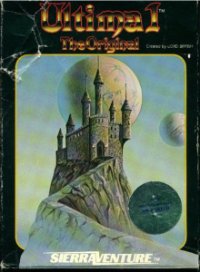

Ultima I
Gameplay: Ultima I is a fantasy adventure game where your character is sent on quests by various kings. Your character will travel far and wide until finally discovering the true game objective.
Impact: Ultima was described as the best of the fantasy/role-playing adventure games (RPGs) out in the September 1981 issue of Softline. It was ranked number 8 in Softalk’s September 1981 Top Thirty list, the same month it was reviewed in Softline. It also had a higher-than-average rating by users in Computer Gaming World’s March-April 1983 issue. Users of Computer Gaming World rated Ultima II, a subsequent Ultima game, number 4 out of more than 80 games.

Ultima Online, a later version of the game that could be played with multiple players online was considered the first popular massively multiplayer online role-playing game (MMORPG) and had a big hand in popularizing MMORPGs.Production History: Ultimate was released in June 1981. It was created by Richard Garriott, also known as his alter ego Lord British. According to Steven Levy, some people saw Garriott as a genius, including Steve Wozniak. Ultima was originally published by California Pacific Computer Company, but it and subsequent versions were later published by Sierra Online and Origin Systems (among others), and finally Electronic Arts.